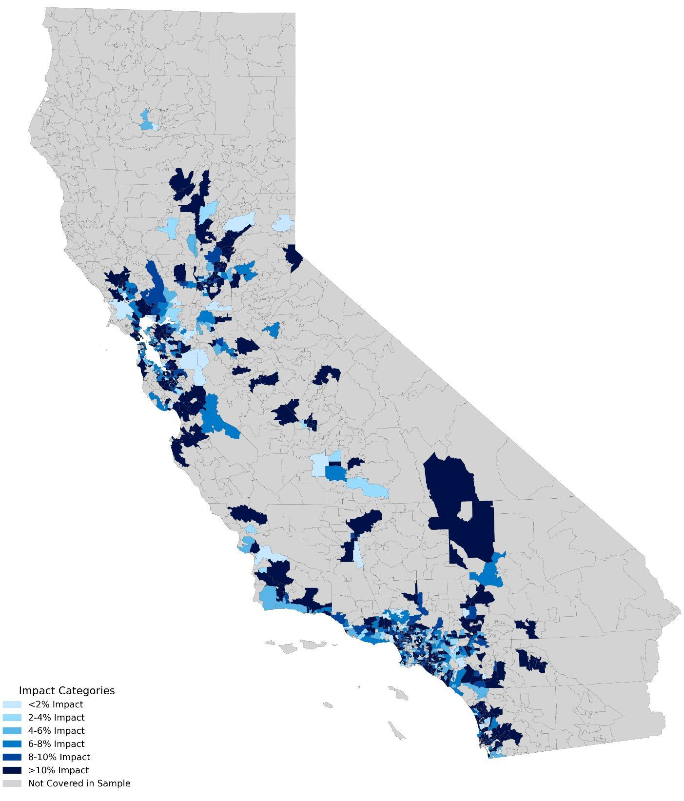
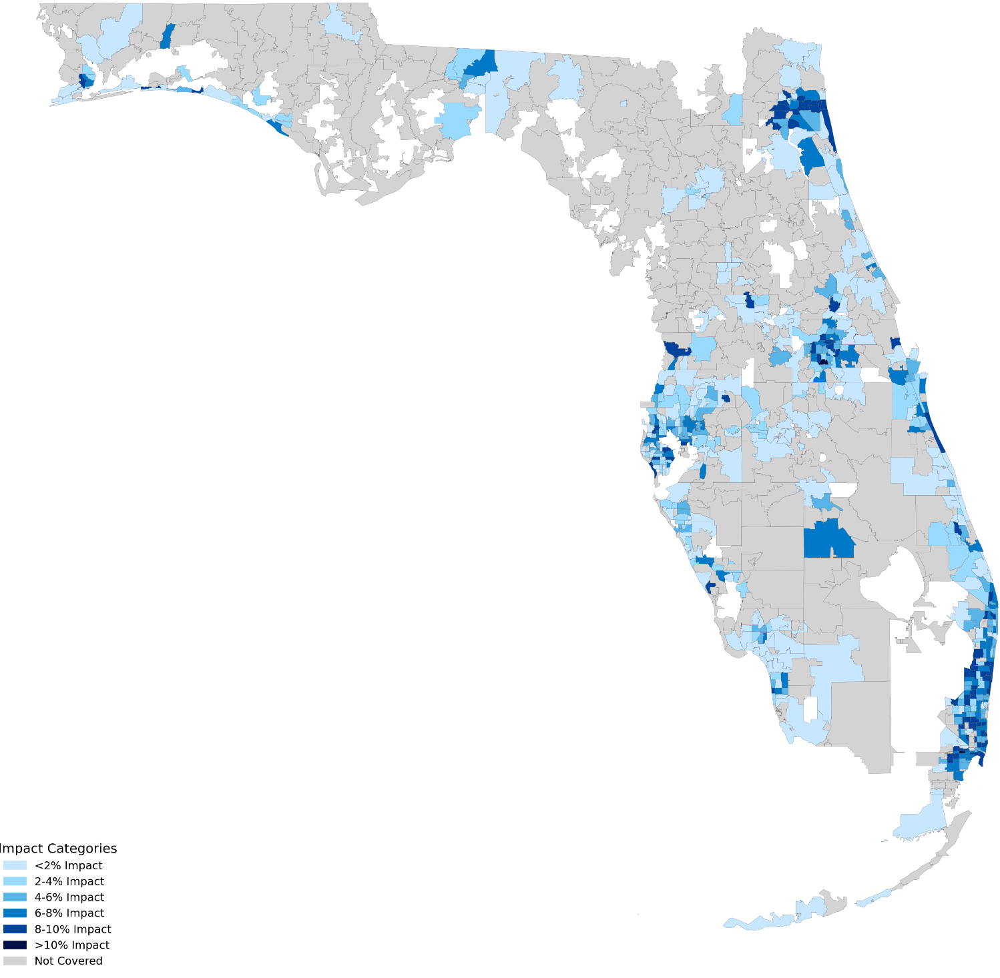
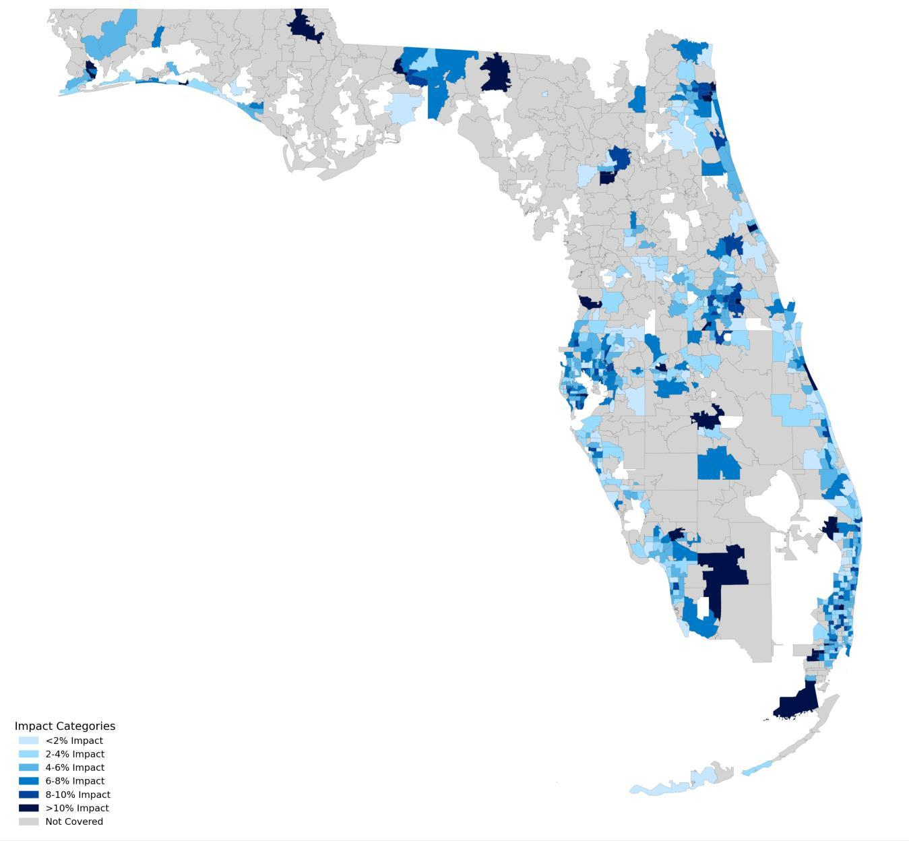

Mina Analytics
Real Estate Model
Our goal at Mina was to put a property-level estimate on green alpha. In our 2025 working paper, Charles Calomiris and I studied what LEED and Energy Star certification could add to office lease revenue in California and Florida. That estimate gives an owner a starting point for deciding where certification is worth the investment.
My contribution
As Head of Quantitative Research, I co-authored the model with Chief Economist Charles W. Calomiris. I built the AI and NLP measurement layer and designed the econometric comparison. Moses Rahnama led the research program and built the underlying data pipeline.
Broker descriptions contain information that standard property records miss. I used language models to turn mentions of features such as rooftop decks into indicators, checked the results against hand-coded text, and used topic models to capture descriptions of finishes and accessibility.
Compare the markets
Estimated premium in lease revenue per square foot for an uncertified building obtaining certification.
Green certification by ZIP code
These maps from Mina Analytics show how the estimated lease premium varies within each state. Blue ranges from less than 2% to more than 10%. Gray marks ZIP codes outside the sample. Select a map to inspect its original legend at full size.




View the Florida Energy Star map

From a state average to a building
The July primer illustrates why a state average can mislead an owner. For two properties in the same Los Angeles ZIP code, REM estimated LEED premiums of 13.1% and 7.0%. An owner could weigh the estimated revenue uplift against the cost of certification before commissioning a more detailed assessment.
Newer buildings are more likely to be certified and can already command higher rents. We estimated baseline revenue using building and location characteristics, then added certification and its interactions. Unmeasured differences can still affect these observational estimates.
Reports and methods
- Company primer · July 2025, with building-level examples
- Green buildings in Florida and California · Certification study
- Garage parking in Florida and California · Amenity study
Methodology PDFs · Model overview · Dataset construction · Variable selection